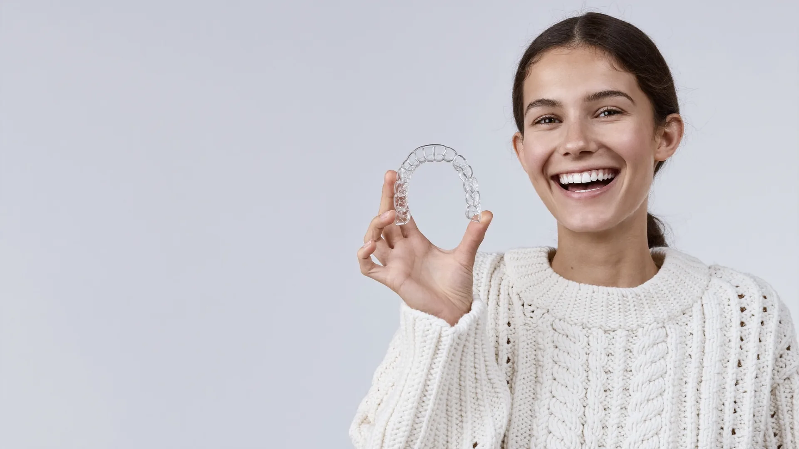
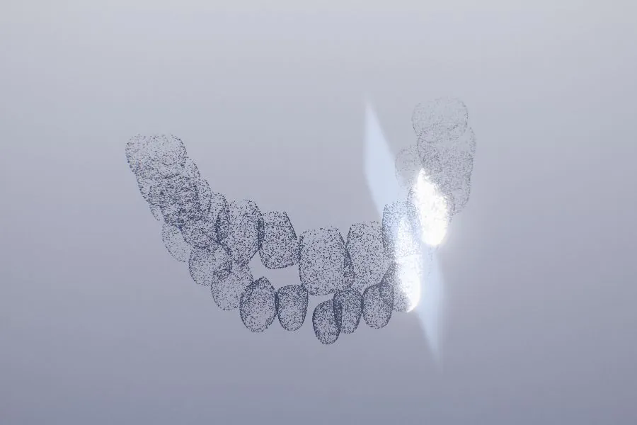
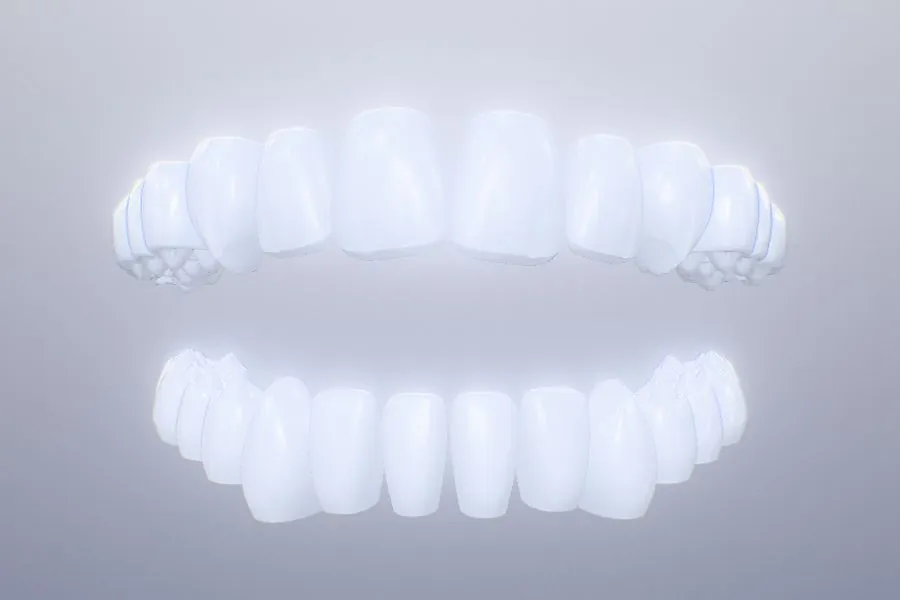
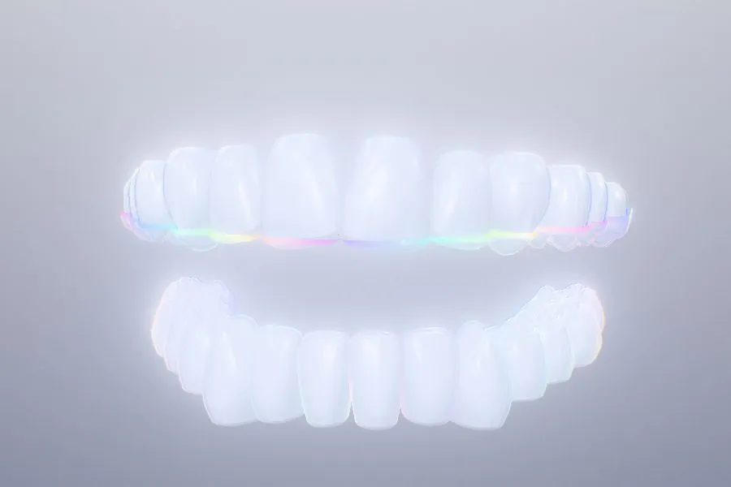
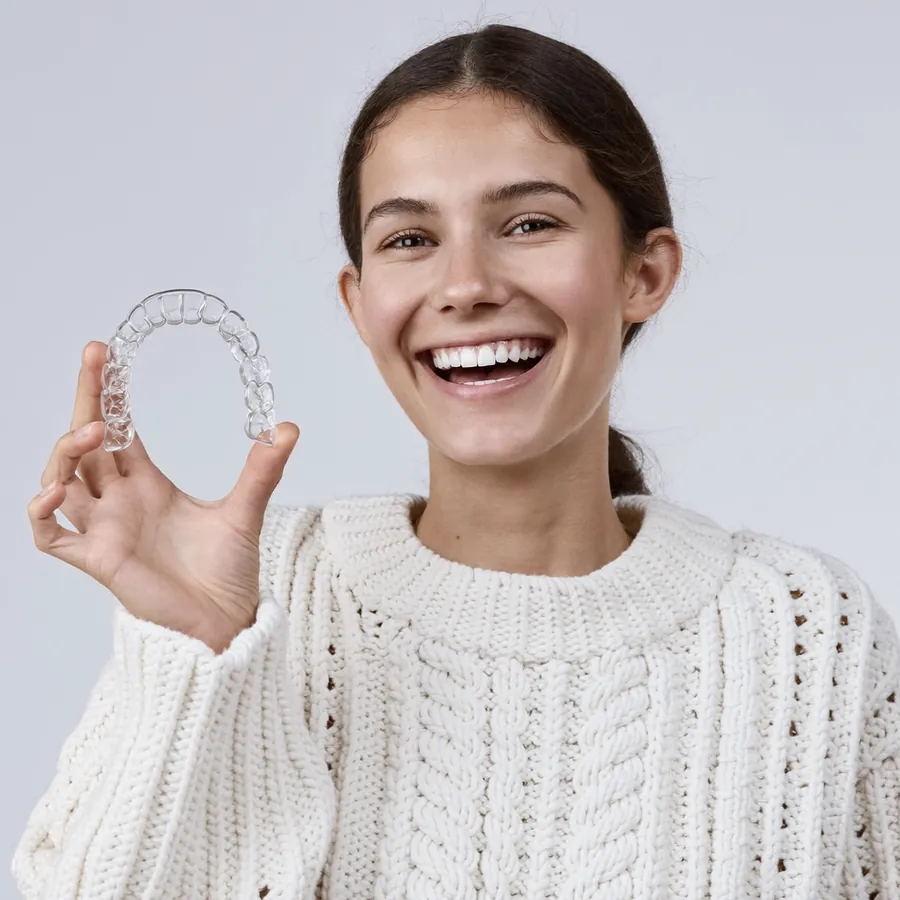
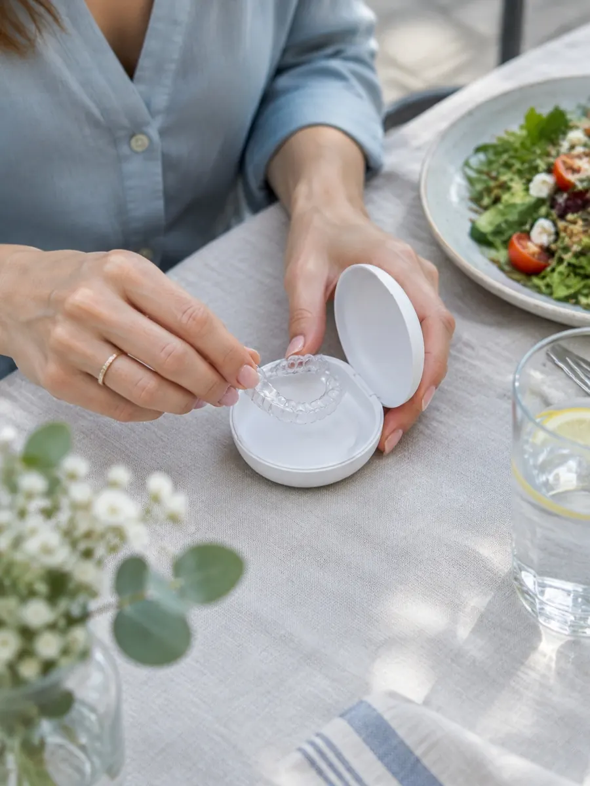
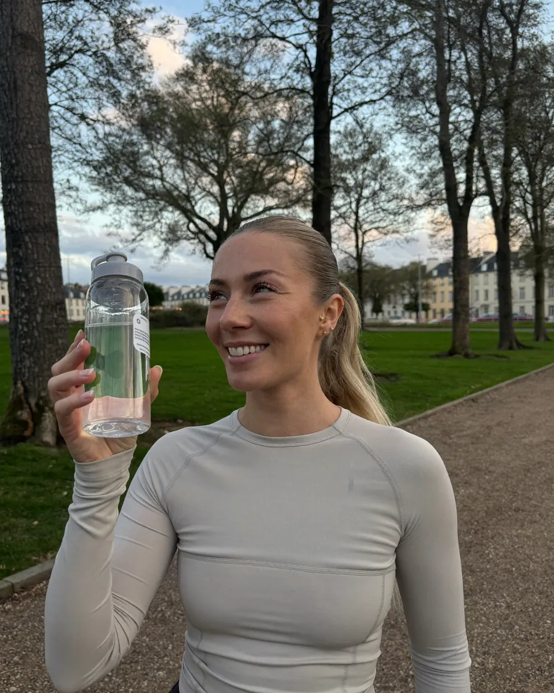
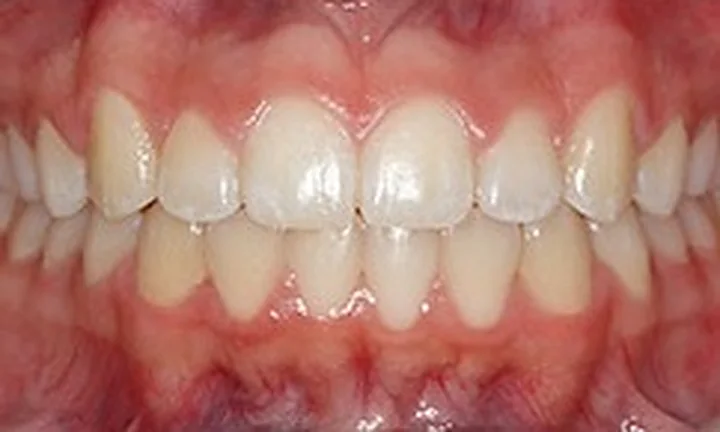
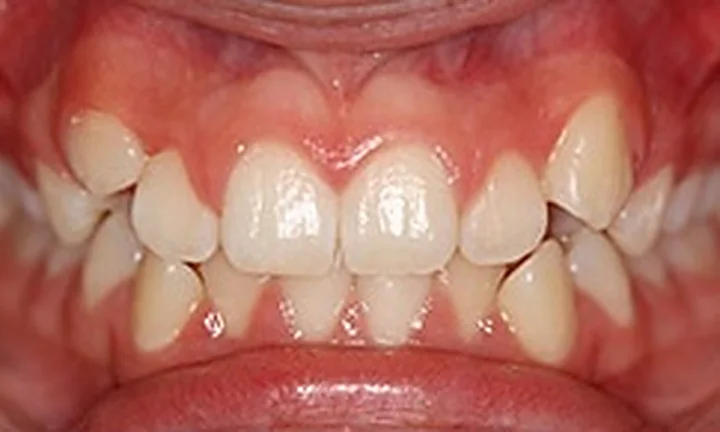

Aligner in Aachen. Schiene für Schiene gerade.
Transparente, herausnehmbare Schienen bewegen Ihre Zähne Schritt für Schritt an ihren Platz. Digital geplant: Sie sehen das Ziel, bevor es losgeht.
Scrollen: aus schief wird geradeDie Ausgangslage
Ein leichter Engstand, ein paar gedrehte Zähne: eine typische Ausgangslage für Aligner.

Kaum zu sehen. Gut zu tragen.
Beratung mit 3D-Scan buchen SymbolbildSo läuft eine Aligner-Behandlung ab.

Der Scan
Statt Abdruckmasse ein digitaler 3D-Scan: In wenigen Minuten sind Ihre Zähne erfasst.

Der Plan
Am Bildschirm planen wir jede Zahnbewegung. Sie sehen das Ziel, bevor die erste Schiene entsteht.

Die Schienen
Maßgefertigt und transparent. Sie tragen jede etwa 22 Stunden am Tag, alle ein bis zwei Wochen kommt die nächste.

Das Ergebnis
Kontrolltermine begleiten die Bewegung, ein Retainer hält das Ergebnis danach stabil.
Welche Situation kennen Sie?
Tippen Sie auf Ihre Situation. Dann sehen Sie, was Aligner da leisten und wie wir vorgehen.
-
Engstand ist der häufigste Grund für Aligner. Die Schienen schaffen Schritt für Schritt Platz und richten die Zähne aus. Wie viele Schienen es braucht, zeigt der Plan nach dem Scan.
Termin zu diesem Anliegen -
Kleine und mittlere Lücken lassen sich mit Alignern oft gut schließen. Am Plan sehen Sie vorher, wie es danach aussieht.
Termin zu diesem Anliegen -
Bei Überbiss, Vorbiss oder Kreuzbiss prüfen wir genau, ob Aligner reichen oder eine feste Spange besser passt. Das sagen wir Ihnen ehrlich.
Termin zu diesem Anliegen -
Dann reichen oft wenige Schienen. Danach hält ein Retainer das Ergebnis stabil.
Termin zu diesem Anliegen -
Aligner sind transparent und herausnehmbar. Zum Essen und Zähneputzen nehmen Sie sie heraus, den Rest des Tages fallen sie kaum auf.
Termin zu diesem Anliegen
Lachen, ohne an die Schiene zu denken.
Beratung mit 3D-Scan buchenUnd im Alltag?
Die Fragen, die uns am häufigsten gestellt werden. Tippen Sie auf eine.
-

Zum Essen nehmen Sie die Schiene heraus. Sie essen alles wie gewohnt.
Danach Zähne putzen und die Schiene wieder einsetzen. Unterwegs liegt sie in ihrer Dose.
-
Wasser jederzeit, auch mit Schiene.
Kaffee, Tee, Saft und Süßes besser ohne Schiene, oder danach den Mund ausspülen: sonst verfärbt sie sich, und Zucker bleibt an den Zähnen.
-
Die ersten Tage lispeln manche ein wenig.
Die Zunge gewöhnt sich schnell daran, meist ist es nach wenigen Tagen vorbei. Im Gespräch fällt die Schiene kaum auf.
-

Sport geht mit Schiene.
Wasser trinken Sie mit Schiene. Für Kontaktsport besprechen wir mit Ihnen einen passenden Schutz.
-
Jede neue Schiene drückt ein, zwei Tage lang.
Das zeigt, dass sie arbeitet. Danach sitzt sie, und Sie merken sie kaum noch.
-
Morgens und abends kurz reinigen.
Mit kaltem oder lauwarmem Wasser abspülen und sanft bürsten. Heißes Wasser verformt die Schiene.
22Stunden
Frühstück
Mittag
Abendessen
Rund 22 Stunden am Tag.
Zum Essen und Zähneputzen nehmen Sie die Schiene heraus. Den Rest des Tages und über Nacht tragen Sie sie. Diese Tragezeit ist der wichtigste Faktor für den Erfolg.
- 1–2 Wochenträgt man eine Schiene, dann kommt die nächste
- Transparentund dünn, im Gespräch kaum zu sehen
- Kontrollenin regelmäßigen Abständen, wir passen bei Bedarf an
Passt ein Aligner zu mir?
Drei kurze Fragen. Am Ende sehen Sie, worauf es bei Ihnen ankommt, und können die Antworten direkt in Ihre Terminbuchung übernehmen.
1 / 3
Ein Fall aus unserer Praxis.
Engstand im Frontzahnbereich, vor und nach der Aligner-Behandlung. Mit Einwilligung veröffentlicht.
Ziehen oder tippen: links vorher, rechts nachher.


Was eine Aligner-Behandlung kostet.
Die Kosten hängen vom Umfang der Fehlstellung und von der Dauer der Behandlung ab. Für Erwachsene ist die Aligner-Therapie in der Regel eine Privatleistung.
Nach Scan und Planung bekommen Sie einen schriftlichen Kostenplan. Den nehmen Sie mit nach Hause und entscheiden ohne Zeitdruck.
AIXSMILEGroßkölnstraße 22-28 · 52062 Aachen
Ihr Kostenplan
- Aligner-Therapie für Erwachsene
- In der Regel Privatleistung
- Bezahlen
- Ratenzahlung häufig möglich
- Danach
- Retainer zur Stabilisierung
Der Preis hängt ab von
- Umfang der Fehlstellung
- Anzahl der Schienen und Dauer
- Kontrolltermine und Retainer
Erst der Scan, dann der Plan.
„Ein strahlendes Lächeln ist mehr als Ästhetik – es ist ein Stück Lebensfreude.“
Ob Aligner zu Ihren Zähnen passen, sagen wir Ihnen nach dem Scan offen. Und wenn eine feste Spange besser wäre, auch das.
Novin MolaieZahnarzt · Zahnarztpraxis AIXSMILE, Aachen
- 5Sprachen in der Praxis
- 22 hTragezeit am Tag
- 1–2Wochen pro Schiene
Freie Termine für die Beratung.
Diese Zeiten sind gerade wirklich frei. Zeit wählen, Namen und Telefonnummer eintragen, fertig.
- Beratung mit digitalem 3D-Scan
- Schriftlicher Kostenplan, bevor es losgeht
- Kommt etwas dazwischen, genügt ein Klick in der Terminmail
- Lieber telefonieren? 0241 31202
Häufige Fragen zu Alignern.
Ihre Frage ist nicht dabei? Wir beantworten sie gern am Telefon oder im Beratungstermin: 0241 31202
Alltag
Sieht man die Aligner?
Kaum. Die Schienen sind transparent und liegen dünn auf den Zähnen. Im Alltag und auf Fotos fallen sie in der Regel nicht auf; für viele Erwachsene ist das der entscheidende Vorteil gegenüber festen Brackets.
Wie viele Stunden muss ich die Schiene tragen?
In der Regel rund 22 Stunden am Tag, also den ganzen Tag und über Nacht. Heraus nehmen Sie sie nur zum Essen und zur Zahnpflege. Die Tragezeit ist der wichtigste Faktor für den Erfolg.
Ist die Behandlung schmerzhaft?
Zu Beginn jeder neuen Schiene kann ein leichtes Spannungsgefühl auftreten, ein Zeichen, dass sich die Zähne bewegen. Es lässt meist nach ein, zwei Tagen nach.
Behandlung
Wie lange dauert die Behandlung?
Das hängt von der Ausgangslage ab. Leichte Korrekturen können in wenigen Monaten gelingen, umfangreichere Fälle dauern länger. Nach der digitalen Planung können wir die voraussichtliche Dauer gut einschätzen.
Eignen sich Aligner für jeden?
Viele Fehlstellungen lassen sich sehr gut mit Alignern behandeln, aber nicht alle. Ob die Therapie für Sie geeignet ist, klären wir im Beratungstermin mit digitalem Scan.
Wie oft muss ich in die Praxis?
Zum Scan und zur Übergabe der Schienen, danach zu Kontrollterminen in regelmäßigen Abständen. Die Schienen wechseln Sie dazwischen selbst, alle ein bis zwei Wochen.
Danach und Kosten
Was passiert nach der Behandlung?
Damit die Zähne in ihrer neuen Position bleiben, folgt eine Stabilisierung mit einem Retainer: einer dünnen Schiene oder einem festen Draht hinter den Zähnen.
Was kostet eine Aligner-Behandlung?
Die Kosten hängen vom Umfang der Fehlstellung und der Dauer der Behandlung ab. Für Erwachsene ist die Aligner-Therapie in der Regel eine Privatleistung. Nach Scan und Planung bekommen Sie einen schriftlichen Kostenplan; Ratenzahlung ist häufig möglich.
In der Großkölnstraße, mitten in Aachen.
Mitten in der Innenstadt, wenige Minuten vom Bushof und vom Markt. Parkhaus Großkölnstraße direkt gegenüber.
- Sprechzeiten
- Mo · Di · Do, 9 bis 16 Uhr
Nur mit Termin - Anschrift
- Zahnarztpraxis AIXSMILE
Großkölnstraße 22-28, 52062 Aachen - Telefon
- 0241 31202
- Bewertungen
- Bei Google, ungekürzt
 Großkölnstraße 22-28Route öffnen
Großkölnstraße 22-28Route öffnen